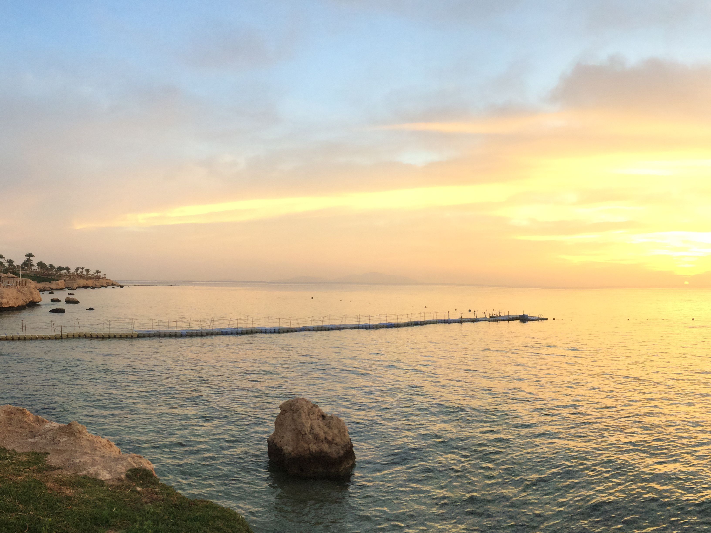

Єгипет
Єгипет- країна африки, одна з відомих курортних країн для нас. Більшість українців, які приїзжають до Єгипту, відпочивають пасивно, лише мала частина приїзжає туди задля екскурсій, пізнання самого Єгипту. Я з батьками також відвідувала Єгипет задля відпочинку, але можу висловти декілька думок. Єгипет- країна для відпочинку або екскурсій, проживання в такому жаркому кліматі та взагалі в самій країні не пригодно, так як в будь-якій європейській країні. Курортне місто яке я відвідувала- Шарм-ель-шейх. На жаль на екскурсію до пірамід баьки не захотіли їхати, але я надіюсь, що в майбутньому мені вдастся там побувати.
Найбільш цікаве у Єгипті- морський світ, тому пропоную при відвідуванні країни обрати дайвінг чи просто взяти з собой підводну маску.


